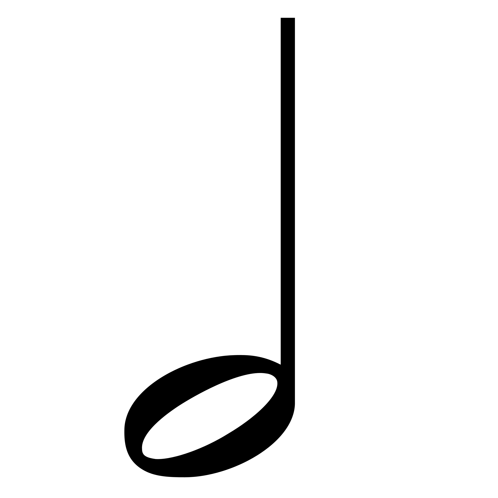
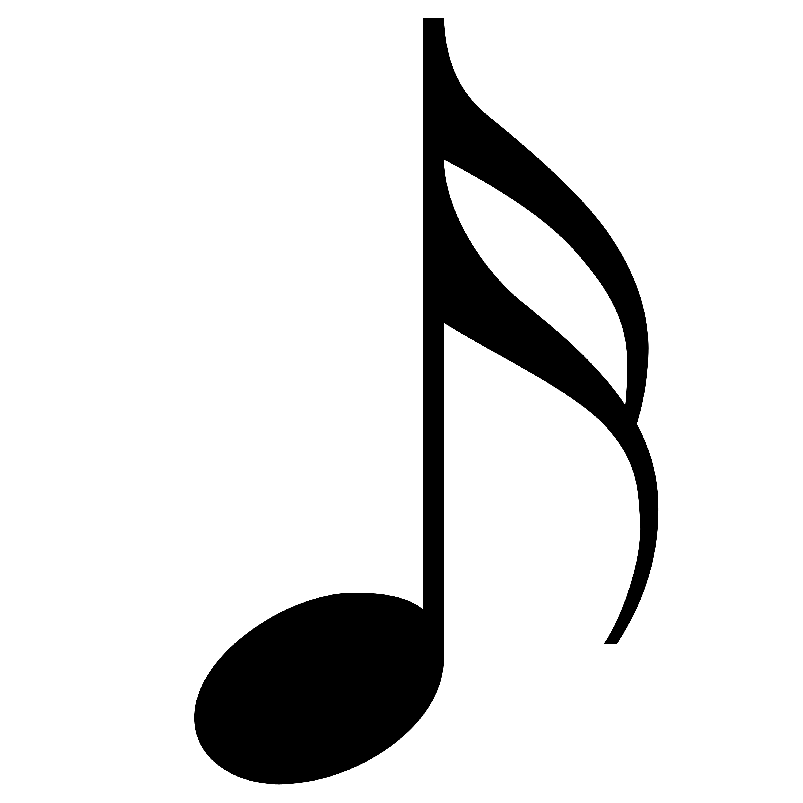
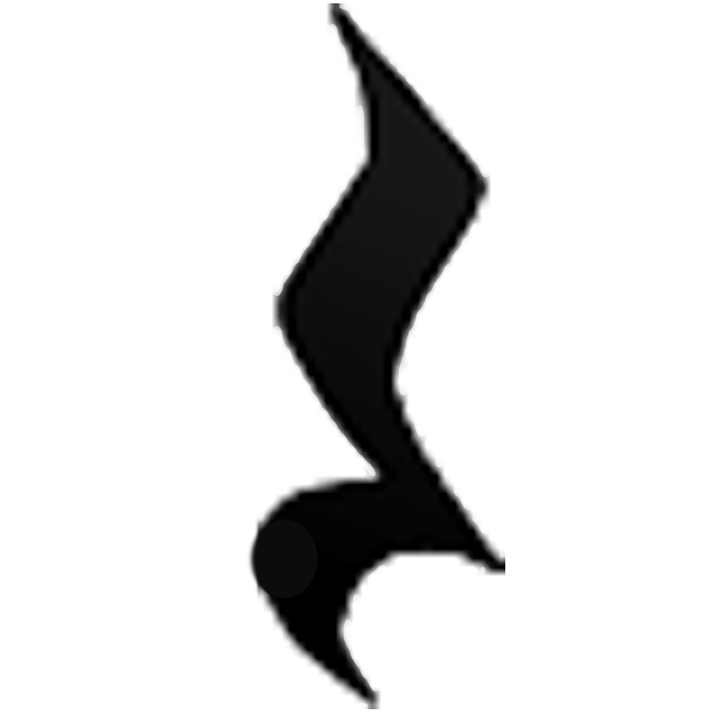

←



a: add note | w: go up | s: go down | delete: delete | r: rests | 1-6: note types | shift: half up/down | shift+click: select multiple
⚙️ Score Settings
Score Settings
Score Title:
Set Title
Key Signature:
Set Key
Time Signature:
/
Set Time Signature